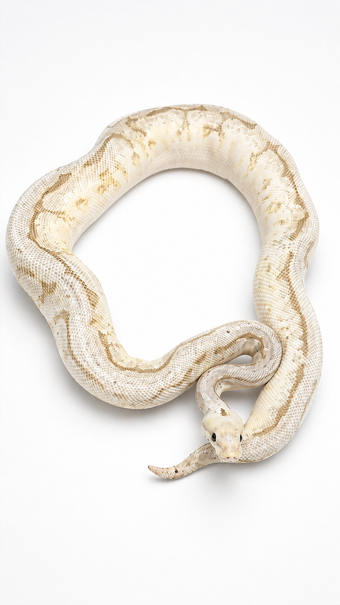

Especie: Ball Python
Sexo: Hembra
Morph: Spider Super Stripe (Spider, Yellow Belly, Spectre)
Año: 2024
Peso: 1,064 g
Origen: CODE
Procedencia: PIMVS YAHUI by César Rico
Estado: Adulta
Combinación genética verdaderamente avanzada y espectacular. Integra los genes Spider, Yellow Belly y Spectre en una expresión visual de gran contraste y complejidad.
Genes Dominantes (incompletos): Spider, Yellow Belly y Spectre.
Forma parte del Archivo Genético CODE como registro documental permanente.